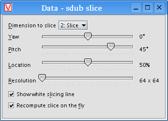

VisBio can slice through your image stack at an arbitrary orientation in 3D, interpolating data along the slicing plane to create an "arbitrary slice." To do it, first import your dataset as described in the Importing a dataset from disk topic. Select your data from the list, then click the "Add >" button and choose "Arbitrary slice" from the popup menu.
Choose a name for the arbitrary slice, and VisBio will create another data object, a child of your original dataset, that represents the slice. To alter the slice parameters, select the slice data object and click the "Edit" button. A window similar to this one will appear:

It is easiest to display the slice in 3D first before adjusting the parameters. First, add your dataset to a 3D display as described in the Displaying a data object topic. Then add the slice object to the same 3D display (not a new one). Doing so will overlay the arbitrary slice on your image stack.
Now when you adjust the slicing parameters, you can see the changes in real time. Yaw and pitch adjust the orientation of the slicing line, while location slides the slice itself forward and backward along the line.
Resolution affects the quality of the computed slice (the higher the resolution, the better it looks, but the more time it takes to compute). It is recommended that you first orient the slice properly, then increase the resolution for a better picture. You can speed up the yaw, pitch and location adjustments even more by unchecking the "Recompute slice on the fly" option.
Lastly, you can toggle the visibility of the guiding white slicing line with
the "Show white slicing line" option.